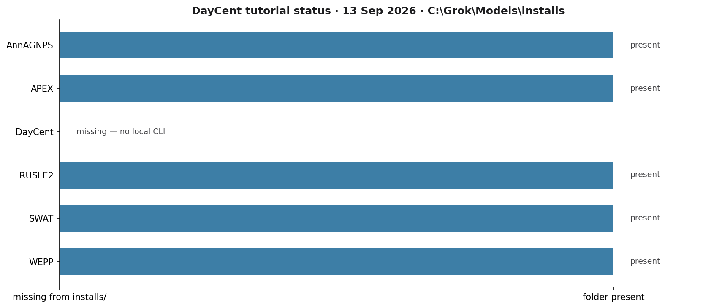
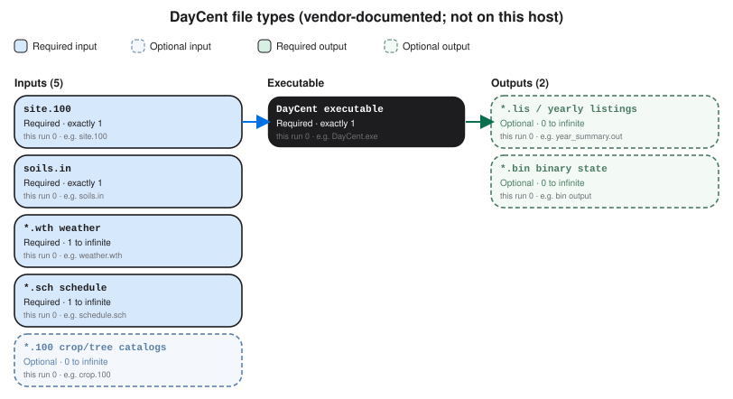

DayCent
A first honest path to DayCent on this Windows host. You open the Colorado State University Soil Carbon Solutions Center page, request the inventory version (rev491), and wait for the vendor package. On 13 Sep 2026 the pinned tree at C:\Grok\Models\installs had seven model folders; DayCent was not among them, so this tutorial stops at the download and a recorded status check.
1. What this model does
DayCent is the daily time-step version of CENTURY. It moves carbon and nitrogen among the plant, the litter, and the soil, and it writes the gases that leave along the way. The four processes you will hear about first are plant growth, organic-matter formation and decay, soil water and temperature by layer, and nitrogen cycling and loss. The CSU page in 2026 advertises the same revision used in the USA EPA greenhouse-gas inventory: rev491.
Typical inputs are daily maximum and minimum temperature, precipitation, surface soil texture, and a schedule of cover and management. Typical outputs are soil organic C and N, net primary production, N2O, and nitrate leaching. The Natural Resource Ecology Laboratory page at CSU describes that science; the software itself is issued through the Soil Carbon Solutions Center.
2. Get the software
Open the Soil Carbon Solutions Center DayCent page. Downloads go to researchers at approved institutions and to members of the Ecosystem Modeling and Data Consortium. If you already have access, acknowledge the terms and download. Otherwise fill out the terms form; CSU emails instructions. There is no anonymous public zip the way there is for AGNPS or WinAPEX.
The older soilcarbonsolutionscenter.colostate.edu/daycent address redirects here. Use the .com page.
3. The lab install
On this host the pinned tree is C:\Grok\Models\installs. DayCent has no folder there, no PACKAGE.md, no golden CLI, and no block in tools\test_all_models.ps1. registry.json does not list it.
| Piece | Where we would pin it | First-run role |
|---|---|---|
| Vendor executable + list/extract utility | installs\DayCent\ (not created) |
The engine and the tool that turns its binary into a readable table. Names change by revision; use the CSU README. |
| Site, schedule, weather, soils | Beside the executable, as the vendor example lays them out | Daily weather, texture, and the management schedule. Required once the package exists. |
| Golden CLI | installs\DayCent\golden |
Would hold a verified example after the first successful local run. |
| WinAPEX-style GUI | — | DayCent is a file-driven CLI. There is no lab GUI path to skip. |
RHEM and SWAT+ also live under installs\; they are outside this tutorial queue. Inventing a Grok\Models\installs\DayCent command would point at a folder that is not there.
4. Novice path: request access, then run the vendor example
Until CSU sends the tree, the work on this host is the status check. After the package is unpacked under installs\DayCent, stand in the vendor example folder, run the executable named in the README, and run the list/extract utility on the binary it writes. Public DayCent manuals describe that pair as the PC execute path; rev491 may use different file names, so copy them from the package rather than from this page.
python C:\Grok\Models\tools\run_daycent_tutorial_verify.py
That wrapper lists installs\, fetches the CSU page, asserts DayCent is still missing, and rewrites the figure. It does not call a DayCent executable.
When the package does arrive, copy it into a new working folder before the first run, the same way the AnnAGNPS and APEX tutorials do. Leave any later golden junction untouched.
5. Confirm the status check
The 13 Sep 2026 run wrote a status folder and a figure. The test is named test_not_installed.
| Check | Where | This verification (13 Sep 2026) |
|---|---|---|
installs\DayCent |
C:\Grok\Models\installs |
absent (numeric 0) |
| Queued models with a folder | AnnAGNPS, APEX, RUSLE2, SWAT, WEPP | 5 / 6 |
| CSU DayCent page | https://www.soilcarbonsolutionscenter.com/daycent/ |
HTTP 200 |
| NREL DayCent page | https://www.nrel.colostate.edu/projects/daycent/ |
HTTP 200 |
registry.json / test_all_models.ps1 |
lab tools | DayCent not listed |
The automated test is test_not_installed inside tools\run_daycent_tutorial_verify.py. It requires DayCent absent, the other five queued models present, no DayCent key in the registry, no DayCent block in test_all_models.ps1, and HTTP 200 (or a redirect) from the CSU page. That is a real assertion on this host’s tree. It is not a soil-carbon number, because no engine ran.
6. This verification’s figure
The 13 Sep 2026 status run counted six names in the tutorial queue. Five have folders. DayCent does not. Extra folders on disk, outside this queue, are RHEM and SWAT+.

docs\tutorials\daycent_status_20260913. Blue bars are present installs. DayCent is the empty row.If you rerun the wrapper after someone pins DayCent, this test is supposed to fail. That failure is the signal to replace this tutorial with a real CLI example.
Model Input and Output
Each bubble is one file type. Solid bubbles are required (at least one must be present). Dashed bubbles are optional. Same-type files that only change location or ID are shown once, with how few and how many a run can hold.

Executable
DayCent executable
Required. How many: exactly 1. This run: 0. Example: DayCent.exe.
This is the Daily Century engine from Colorado State. Required once the package is installed. It is not on this host today. Open the example file in the verification folder to see that layout on disk.
Input files
site.100
Required. How many: exactly 1. This run: 0. Example: site.100.
This is the site file: latitude, soil texture class, and related site constants. NREL documentation treats one site file as required. Open the example file in the verification folder to see that layout on disk.
soils.in
Required. How many: exactly 1. This run: 0. Example: soils.in.
This is the layered soil file. NREL documentation treats one soils.in as required. Layer counts are rows, not extra files. Open the example file in the verification folder to see that layout on disk.
*.wth weather
Required. How many: 1 to infinite. This run: 0. Example: weather.wth.
This is daily weather: maximum and minimum temperature and precipitation. At least one weather file is required. Extra files if you split stations. Open the example file in the verification folder to see that layout on disk.
*.sch schedule
Required. How many: 1 to infinite. This run: 0. Example: schedule.sch.
This is the management schedule the engine reads first. One schedule is required. Extra .sch files only if you run other scenarios. Open the example file in the verification folder to see that layout on disk.
*.100 crop/tree catalogs
Optional. How many: 0 to infinite. This run: 0. Example: crop.100.
These are crop, tree, and related parameter catalogs. Optional until the schedule names them. One file per catalog in use. Open the example file in the verification folder to see that layout on disk.
Output files
*.lis / yearly listings
Optional. How many: 0 to infinite. This run: 0. Example: year_summary.out.
These are yearly listing files DayCent writes when a schedule completes. Optional until a run exists. Not present on this host. Open the example file in the verification folder to see that layout on disk.
*.bin binary state
Optional. How many: 0 to infinite. This run: 0. Example: bin output.
These are binary state files some DayCent builds write. Optional. None exist here because the engine is not installed. Open the example file in the verification folder to see that layout on disk.
7. After the package arrives
Pin the CSU tree under installs\DayCent, add a PACKAGE.md, keep a golden copy of the vendor example, and run that example from a fresh folder. Then rewrite this page with the executable name, the schedule file, and a plot of soil organic carbon or N2O from that run. Until then, start at the Soil Carbon Solutions Center.